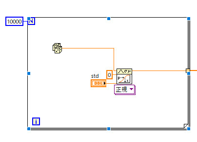

ランダムな数の発生方法-05
４．Labview，エクセルでの計算
次に，実際に，Labview，エクセルで正規分布の乱数を作成してみましょう．
・Labview (ver.2009)
前ページの
\(\Large \frac{1}{ \sqrt{ \mathstrut 2 \ \pi \ \sigma^2}} \int_{-\infty}^x e^{- \frac{x^2}{2 \sigma^2}} \)
の関数は，数学→確率と統計→確率→連続CDF，にあります．
（CDF；Cumulative Distribution Function）
となります．この逆関数は同じ場所に，
連続逆CDF
があります．このアイコンから，正規逆CDF，を選択すればよいわけです．
実際のプログラムは至って簡単で，

で実行可能です．Labview用のヒストグラムをとるときちんと設定した標準偏差の正規分布をしていることがわかります．
・エクセル (ver.2016)
エクセルの場合も非常に簡単で，
が正規確立密度関数（関数形式がFALSE）もしくは累積分布関数（関数形式がTRUE）を表します．
この逆関数が，
であり，指定した平均と標準偏差に対する正規分布の累積分布関数の逆関数の値を返します
これも，エクセル用のヒストグラムをとるときちんと設定した標準偏差の正規分布をしていることがわかります．